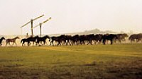
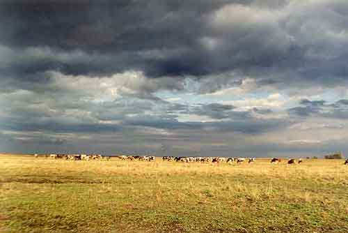

|
|
|
Nationalpark Hortobágyi Puszta
|
|
|
Nationalpark Hortobágyi Puszta
- das größte Pusztagebiet südwestlich der Großstadt Debrecen
Die Landwirtschaft hat das Bild einstiger Grassteppen
tiefgreifend verändert. Nur ihr Herz, die Hortobágy-Puszta,
die sich östlich von Budapest zwischen Debrecen und Tiszafüred
erstreckt, konnte ihren Urzustand bewahren. Dieses
Naturparadies wurde benannt nach dem Flüsschen, das sich von
Norden nach Süden durch die Ebene zwischen der Theiß und der
Stadt Debrecen schlängelt.
|
Bekannt sind östlich der Donau
weitere Pusztagebiete, u.a. Ecsegpuszta bei
Túrkeve und Bugacpuszta bei Kecskemét. Im Nationalpark "Kiskunság"
befinden sich weitere touristische Puszta-Attraktionen: die
Pusztagebiete Alajpuszta, Bugacpuszta, Lajosmizse, die
vorwiegend mit Pferde- und Reitvorführungen zur Unterhaltung
der Reisenden beitragen.
Der
befindet sich in der Mitte der
Hortobágyi Puszta. Besondere
Attraktionen sind hier Reit-, Kutsch- und landwirtschaftliche
Vorführungen, auch von Haustieren, die einst von den Ungarn
aus den asiatischen Steppen in die neue Heimat mitgebracht und
seitdem genetisch unverändert zu den wertvollsten
landwirtschaftlichen Schätzen in Europa zählen.
|
|
 |
Bild
links: ein Pferdegestüt
in der Puszta.
Ein Ausflug in das größte Pusztagebiet "Nationalpark Hortobágy" ist
ein Muss für alle Touristen, ein unvergessliches
Erlebnis und bringt Abwechslung für die Kurgäste.
Bild
rechts: externe Rinderhaltung
in den endlosen Weiten der Puszta bei Hortobágy.
|
 |
 |
Ein Teil der Hortobágyi Puszta wurde in
den siebziger Jahren zum Nationalpark erklärt. Seine
ökologische Vielfalt reicht von Auwaldresten in den
Überschwemmungsgebieten der Theiß über
Eichenwälder bis zu salzigen Sumpfgebieten und zur
Trockenrasen-Steppen.
Dementsprechend artenreich ist die Tier- und
Pflanzenwelt. Halophyten (salzresistente Pflanzen) weisen auf den hohen
Salzgehalt der Böden hin, eine Reliquie aus einer Zeit, als
die Große Ungarische Tiefebene noch vom Meer bedeckt war.
Mehr als 240 Vogelarten brüten im Nationalpark Hortobágy, darunter der
weltweit als Plage geltende, mancherorts trotzdem geschützte Kormoran und der
schützenswerte Steppenvogel Großtrappe (Bild links). |
|
Pusztaprogramme
- Veranstaltungen - Sehenswürdigkeiten
|
|
|
 |
Jährlich einmal im August findet der
traditionelle Brückenmarkt auf der berühmten
Neun-Bogen-Brücke bei Hortobágy statt. Da werden nicht nur Pferde
gehandelt - lassen Sie sich doch überraschen! |
|
Auf der Wasserbühne werden nachmittags
farbenprächtige und abwechslungsreiche Folkloreprogramme
vorgeführt. Im Hof der Csárda von
Hortobágy werden für die hungrigen Gäste
verschiedene Hirtengerichte - Schlambutz und Gulyás-Suppe -
zubereitet, auch ein Ochse wird gebraten und serviert. |
 |
 |
Sehr beeindruckend ist es die Puszta zu
durchwandern. Es werden aber auch Reittouren und Planwagenfahrten
angeboten. Auch Kulturliebhaber finden ihre
Sehenswürdigkeiten. Bei Reiterspielen im benachbarten
Máta kann man Ende Juni die Pferdehirten in Aktion erleben.
Reitvorführungen sind
nur eine der Attraktionen in der Puszta bei Hortobágy.
Kutschfahrten und landschafts-typische
Kochvorführungen der Pusztahirte sollte man
vor Ort nicht entgehen lassen. |
 |
- Thermalkurort 20 km
südwestlich von Debrecen - das
Mekka
der Rheumatiker
|
 |
Debrecen - mit rd. 200.000 Einwohnern ist heute die
drittgrößte Stadt in Ungarn. Debrecen gilt als der
Ausgangspunkt der Kalvinistisch Reformierten Kirchenbewegung in Ungarn,
die im Großen Tempel von Debrecen begann. |
Debrecziner Blumenkarneval und Karnevalswoche
Seit 1961 alljährlich eine Woche vor dem 20. August
Alljährlich am 20. August wird anlässlich des
Nationalfeiertages der Blumenkarneval. In Europa gilt dieses Ereignis
hinsichtlich Größe und Umfang an Blumenkompositionen
als einzigartig. Mehrere Millionen Blumen werden für die
Blumenarrangements verwendet und 14-16 geschmückte Wagen
rollen durch die Stadt. In der Woche vor dem Blumenkarneval kann man
Veranstaltungen, wie Opern-, Operetten- und
Theateraufführungen sowie Rockkonzerte kostenlos besuchen. Aus
dem kürzlich renovierten Hauptplatz werden die meisten
Veranstaltungen organisiert und es treten hier auch die zum
Blumenkarneval eingeladenen ausländischen Künstler
auf. Zudem wird die Stimmung durch einen Straßenball
angeheizt.
|
 |
 |
Ministerpräsident Viktor Orbán sei Dank für die Legalisierung
des Hausgebrannten aus dem eigenen Garten. Seitdem haben
Geheimrezepturen keine Chance und man weiß bescheid, woher der
Geist kommt.
Auf den meist kargen Sandböden der Puszta wächst der Aprikosenbaum
- die Quelle für den berühmten Pusztaschnaps Barackpálinka
bzw. Aprikosengeist. |
Die besten Kochrezepte aus den Pusztagebieten:
Das Rezept für das original ungarische
ist
bekannt aus der Nähe von Debrecin
- ist ein
in ganz Ungarn beliebtes fleischloses Schnellgericht
- ist vergleichbar mit
|
 |
| |
| |
| |
|
Ungarn-Tourist Team

|
| |
| |
|